Python是最容易学习的编程语言之一，其语法近似英语。通常，初学者只会遇到一些小麻烦，如强制缩进、在函数中使用self等。
然而，当开始阅读、复制和编辑他人代码时，麻烦就接踵而至了。
这里，我将解释五个关于Python的概念，这些概念将有助于初学者修改他人代码。这些建议通过总结Python开发新手在研讨会上遇到的问题以及分析开发者社区的在线讨论编写而成的。这些开发者社区主要关注API的使用，图像处理以及RICOH THETA相机的元数据（文本）处理等。其中，较为典型的开发者具有Java、C、JavaScript或bash的中级编程经验，但在Python方面仍是新手。
他们可以自己编写Python代码来解决问题，然而在阅读他人代码时往往会遇到问题。
以下是帮助大家更好地理解Python的五点建议。
1. * args和 kwargs是函数参数**
如果您查看Python模块或者这些模块的相关文档，您可能会看到*args和**kwargs。它们看起来像C语言里的指针，实际上并非如此。*args只是函数的参数列表。**kwargs是关键字参数的字典。
*args示例：
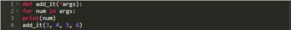
输出：
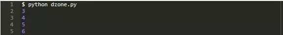
**kwargs示例：
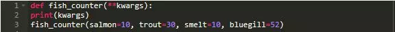
输出：
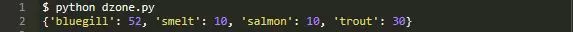
args和kwargs示例的代码位于文件args_example.py，可在此处获取。
2.列表解析是使用循环时的一种快捷方式
列表解析是返回列表的一种简便方法。在代码中，for循环写作for number in args。
当循环中的表达式为num **2时，返回的列表值将为参数的平方。
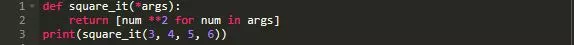
输出：
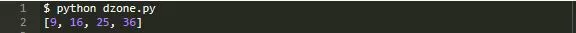
您可以在列表解析的末尾添加过滤器以过滤输出结果。例如，仅对偶数进行平方，可以采用如下过滤方式：
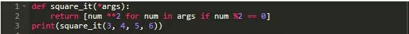
输出：
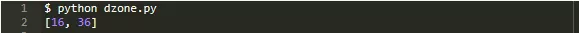
列表解析并未对for循环添加任何特殊的功能，采用这种方式是因为它更为简短，并且在习惯语法后会使代码更易于阅读。不过有些开发者会过度使用列表解析，反而使代码更难理解。这一点需要注意，复杂的列表解析和多个循环嵌套并非最佳实践。
如果您刚开始学习Python，并遇到一个复杂的for循环，可以在网上搜索列表解析并查看如下三个组件的语法：
表达式
for循环
过滤器
3. F-strings可以替代.format()
Python非常适合处理字符串，至少提供了3到4种将变量插入字符串的方法。这些方法大多数都较为笨重，但是有一种非常酷。
字符串连接
之前您也许写过如下代码：
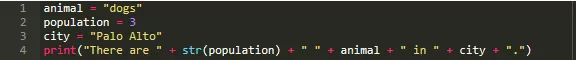
输出：
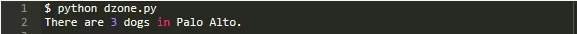
这种写法难以阅读，并且容易出现错误。即使存在语法高亮，仍会出现缺少空格的情况。
字符串替换
字符串替换可以帮助减少错误。
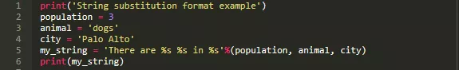
输出：
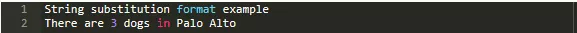
使用字符串替换的示例位于文件format_example.py，可在此处获取。
字符串格式
一个更好的方式是使用.format()方法，如下所示：
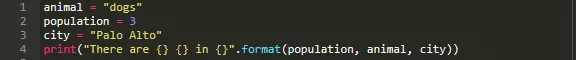
尽管.format在字符串连接方面有很大地提升，但处理上仍然很笨重。
F-strings
要使用f-strings，首先需要将Python升级至3.6或3.7版本。
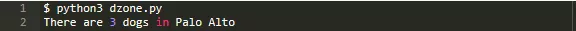
4. Lambda函数是匿名的
Python lambda函数是一种快捷方式。尽管可以将其指定为某变量，类似于普通函数，但通常情况下使用如下语法写作匿名函数。
输出：
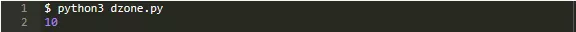
如同Python中的多数快捷方式，lambda函数并不会带来新的功能。尽管如此，使用此语法可以减少代码的复杂程度。
5. 使用装饰器来扩展Python函数
使用装饰器时，通常会在一个函数上方标注@decorator_name。
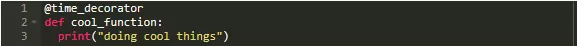
装饰器可以任意命名，例如@panda。在使用装饰器时，您无需了解如何创建自己的装饰器以便使用，可以参考Django的http装饰器的相关文档。
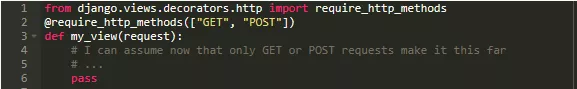
import这行代码允许您使用预先构建好的装饰器。在这种情况下，您只需了解@require_http_methods为您创建的函数my_view()添加的额外功能即可。
补充建议
由于我主要和一群专注于特定问题的人讨论Python编程，这里，我希望得到适用于新手程序员的其他建议，以帮助他们更好地在开发者社区进行交流。